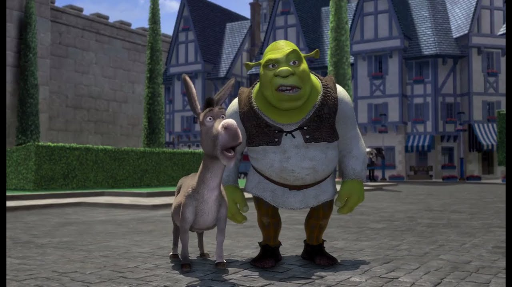
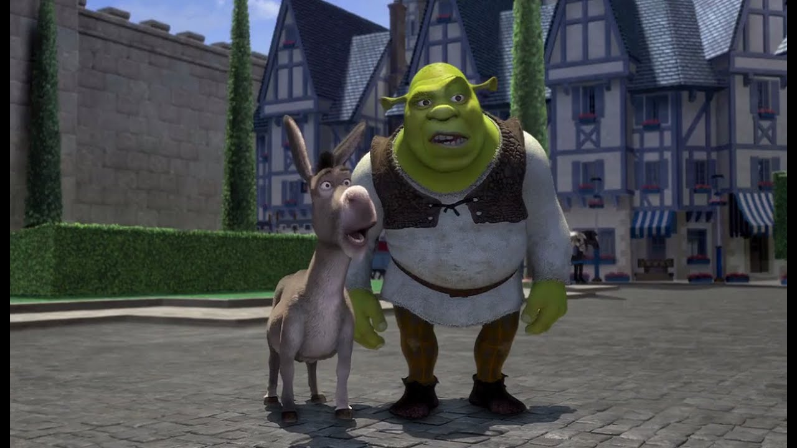

Question - Animated Monsters

In the Shrek series, what vegetable does Shrek compare ogres to?
A) Cucumber
B) Onion
C) Cabbage

In the Shrek series, what vegetable does Shrek compare ogres to?
A) Cucumber
B) Onion
C) Cabbage